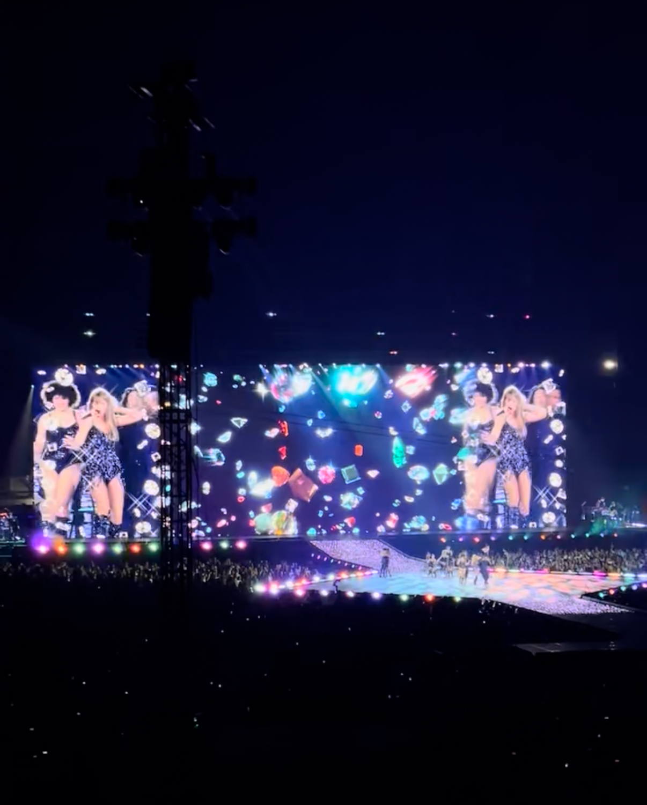
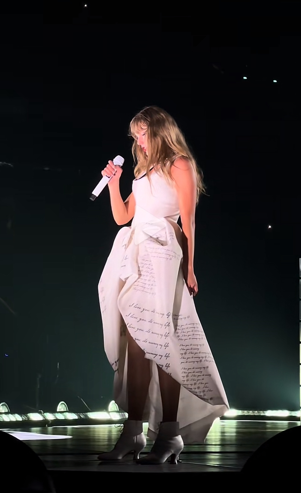

"Midnights," Taylor Swift's tenth studio album, was released on October 21, 2022. This album marked a return to a more pop-oriented sound, blending synth-pop, dream pop, and electronic elements. "Midnights" features hit singles like "Anti-Hero," "Lavender Haze," and "Bejeweled." The album received widespread acclaim from critics, who praised its introspective lyrics and cohesive production. It debuted at number one on the Billboard 200 chart and became one of the best-selling albums of the year, further solidifying Swift's status as a leading figure in contemporary pop music.
| Track Number | Song Title | From the Vault? | Features |
|---|---|---|---|
| 1 | Lavender Haze | ||
| 2 | Maroon | ||
| 3 | Anti-Hero | ||
| 4 | Snow On The Beach | Lana Del Rey | |
| 5 | You're On Your Own Kid | ||
| 6 | Midnight Rain | ||
| 7 | Question...? | ||
| 8 | Vigilante Shit | ||
| 9 | Bejeweled | ||
| 10 | Labyrinth | ||
| 11 | Karma | ||
| 12 | Sweet Nothing | ||
| 13 | Mastermind | ||
| 14 | The Great War | ||
| 15 | Bigger Than The Whole Sky | ||
| 16 | Paris | ||
| 17 | High Infidelity | ||
| 18 | Glitch | ||
| 19 | Would've, Could've, Should've | ||
| 20 | Dear Reader | ||
| 21 | Hits Different | ||
| 22 | Snow On The Beach (feat. More Lana Del Rey) | Lana Del Rey | |
| 23 | Karma | Ice Spice |

"The Tortured Poets Department, Taylor Swift's eleventh studio album, was released on March 15, 2024. This album explores darker themes and delves into more experimental sounds, blending alternative rock, indie pop, and electronic influences. "
| Track Number | Song Title | From the Vault? | Features |
|---|---|---|---|
| 1 | Fortnight | Post Malone | |
| 2 | The Tortures Poets Department | ||
| 3 | My Boy Only Breaks His Favorite Toys | ||
| 4 | Down Bad | ||
| 5 | So Long, London | ||
| 6 | But Daddy I Love Him | ||
| 7 | Fresh Out The Slammer | ||
| 8 | Florida!!! | Florence + The Machine | |
| 9 | Guilty as Sin? | ||
| 10 | Who's Afraid of Little Old Me? | ||
| 11 | I Can Fix Him (No Really I Can) | ||
| 12 | loml | ||
| 13 | I Can Do It With a Broken Heart | ||
| 14 | The Smallest Man Who Ever Lived | ||
| 15 | The Alchemy | ||
| 16 | Clara Bow | ||
| 17 | The Black Dog | ||
| 18 | imgonnagetyouback | 19 | The Albatross |
| 20 | Chloe or Sam or Sophia or Marcus | ||
| 21 | How Did It End? | ||
| 22 | So Highschool | ||
| 23 | I Hate It Here | ||
| 24 | thanK you aIMee | ||
| 25 | I Look in People's Windows | ||
| 26 | The Prophecy | ||
| 27 | Cassandra | ||
| 28 | Peter | ||
| 29 | The Bolter | ||
| 30 | Robin | ||
| 31 | The Manuscript |

"The Life Of A Showgirl," Taylor Swift's twelfth studio album, was released on August 10, 2024. This album delves into theatrical and narrative-driven songwriting, blending elements of pop, rock, and musical theater. "The Life Of A Showgirl" features elaborate storytelling and character exploration, with standout tracks like "The Fate of Ophelia" and "The Life of a Showgirl." The album received positive reviews for its ambitious concept and Swift's vocal performances. It debuted at number one on the Billboard 200 chart, showcasing Swift's versatility as an artist and her ability to captivate audiences with diverse musical styles.
| Track Number | Song Title | From the Vault? | Features |
|---|---|---|---|
| 1 | The Fate of Ophelia | ||
| 2 | Elizabeth Taylor | ||
| 3 | Opalite | ||
| 4 | Father Figure | ||
| 5 | Eldest Daughter | ||
| 6 | Ruin The Friendship | ||
| 7 | Actually Romantic | ||
| 8 | Wi$h Li$t | ||
| 9 | Wood | ||
| 10 | CANCELLED! | ||
| 11 | Honey | ||
| 12 | The Life of a Showgirl | Sabrina Carpenter |